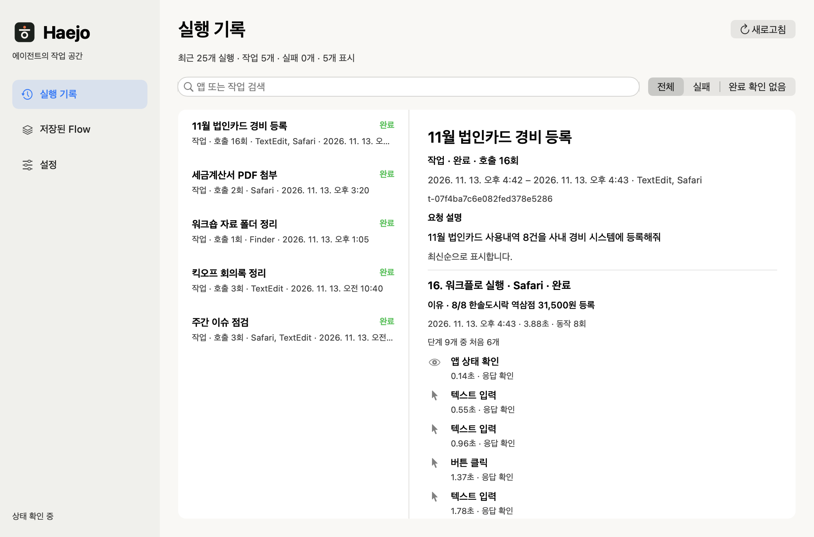

귀찮은 일은
"해줘"
Claude Code와 Codex가 내 Mac의 앱과 Safari를 직접 다룹니다. 나는 하던 일을 계속하면 됩니다.
함께 쓰는 에이전트 Claude
Claude Codex
Codex
바로 조작
쓰던 창은 그대로,
일은 뒤에서.
API가 없는 사내 시스템, 버튼을 눌러야만 바뀌는 설정. Haejo는 그 화면을 직접 읽고, 누르고, 입력합니다. 웹 작업은 로그인해 둔 내 Safari에서, 지금 쓰는 앱 뒤에서 열립니다.
웹 조작마다 가장 조용한 방법부터 씁니다
- 접근성으로, 뒤에서
링크, 버튼, 입력란, 선택 메뉴, 날짜 선택. 마우스와 키보드는 그대로 내 것입니다.
- 그 창으로 키 전송
키 입력에만 반응하는 칸에 씁니다. Safari는 계속 뒤에 있습니다.
- 잠깐 Safari를 앞으로
포인터를 눌러야 열리는 메뉴, 마우스를 올려야 나오는 메뉴에 씁니다. 끝나면 쓰던 앱이 다시 앞에 옵니다.
결과에는 어떤 방법을 썼는지 함께 적힙니다. Safari 27.2에서 웹 조작 22종을 측정했고 20종이 뒤에서 끝납니다. 측정표 보기
법인카드 경비 등록
3분기 실적 요약
신규 고객사 온보딩이 끝나면서 매출이
탭
열려 있는 탭을 제목으로 골라 그 페이지에서 작업합니다.
파일 첨부
지정한 파일을 페이지의 첨부 칸에 넣고, 페이지에 뜬 파일 이름으로 확인합니다. 파일을 고르는 1초 미만 동안만 Safari가 앞에 나옵니다.
페이지 스크립트 선택
Safari 개발자 설정에서 허용하면 지금 보이지 않는 탭의 글과 값도 읽고 채웁니다.
Mac 앱
TextEdit, Finder, 계산기처럼 메뉴와 버튼으로 쓰는 앱도 같은 방식으로 다룹니다.
기록
뭘 했는지,
전부 남습니다.
요청 하나가 작업 하나로 묶입니다. 어떤 앱에서 무엇을 왜 했고 결과가 어땠는지, Haejo 앱의 실행 기록에서 호출 단위로 확인하세요.

- 작업마다
무슨 요청이었고 목표가 무엇이었는지.
- 호출마다
왜 했는지, 어떤 동작을 했는지, 결과와 걸린 시간.
- 이 Mac에 저장
보관 기간은 7·30·90일 중에서 고릅니다. 기록에는 한 일과 이유가 담기고, 화면 내용과 입력한 값은 담기지 않습니다.
Flow
한 번 한 일은,
다음 달에도 그대로.
끝낸 작업을 Flow로 저장하세요. 다음에는 바뀐 값만 넣으면 Haejo가 같은 순서로 실행하고 결과를 확인합니다. 재생할 때는 모델을 부르지 않습니다.
- 모델 호출
- 0회
- 12월 경비 6건 재생
- 20.7초
영상에서 12월 경비 6건을 재생한 실측값입니다.
화면이 바뀌어 버튼을 찾지 못하면, 자동 수리를 켠 실행은 그 단계만 에이전트가 고쳐서 이어갑니다. Flow 파일 보기
expense-entry
7단계 · 값 6개만 바꿔 넣습니다- 사용일자
{{date}} - 가맹점명
{{merchant}} - 비용 분류
{{category}} - 금액
{{amount}} - 프로젝트 코드
{{project}} - 사용 내용
{{memo}} - 등록
결과 확인
12월 재생
저장한 Flow · 값만 교체- 카카오T 택시12,800원등록 확인 3.6초
- 스타벅스 선릉점22,400원등록 확인 3.4초
- 오피스디포45,600원등록 확인 3.3초
- 코레일 KTX59,800원등록 확인 3.5초
- 김밥천국 역삼점24,000원등록 확인 3.6초
- 교보문고 강남점28,000원등록 확인 3.3초
설치
세 단계면
첫 작업까지.
-
내려받아 열기
DMG를 열어 Haejo를 Applications 폴더로 옮기고 엽니다.
Mac용 다운로드버전 1.0.2 · 85.2MB · Apple Silicon · macOS 27.0 이상 · 릴리스 노트
-
권한 두 가지 허용
Haejo 창에서 각 항목의 '설정 열기'를 누르면 시스템 설정 옆에 안내 창이 함께 뜹니다. 앱 조작은 Haejo Helper에, 화면 캡처는 Haejo에 허용합니다. 화면 캡처는 선택입니다.
-
첫 작업
앱을 열면 Claude Code와 Codex에 Haejo가 연결됩니다. '첫 작업 시작'을 누르면 에이전트가 TextEdit에 환영 메모를 쓰고 확인합니다. 그다음부터는 평소처럼 말하면 됩니다.
이번 달 법인카드 내역 8건을 경비 시스템에 등록해줘

Claude와 Codex 둘 다 쓸 수 있나요?
네. Haejo 앱을 열면 Claude Code와 Codex에 haejo 명령과 스킬이 연결됩니다. 저장한 Flow는 어느 에이전트가 만들었든 같은 방식으로 재생됩니다.
웹 작업은 어떤 브라우저에서 하나요?
내 Safari입니다. 이미 로그인해 둔 계정과 열어 둔 탭을 그대로 쓰고, 지금 쓰는 앱 뒤에서 진행합니다. 브라우저에 따로 설치할 것은 없습니다.
실행 기록은 어디에 저장되나요?
이 Mac에만 저장되고 다른 곳으로 올라가지 않습니다. 보관 기간(7·30·90일)을 고르고, 설정에서 기록을 끄거나 저장된 기록을 지울 수 있습니다.
Flow를 재생할 때 정말 모델을 쓰지 않나요?
저장한 Flow의 재생은 모델 호출 0회입니다. 처음 Flow를 만들 때와, 자동 수리를 켜 두고 화면이 바뀌었을 때는 에이전트의 모델을 씁니다.
어떤 Mac에서 되나요?
Apple Silicon Mac과 macOS 27.0 이상, 그리고 Claude Code 또는 Codex가 필요합니다. Windows는 실험 단계이고 Intel Mac은 지원하지 않습니다.
에이전트에 내장된 computer use와는 얼마나 다른가요?
같은 작업 세 가지를 Codex 내장 computer use와 나란히 실행했을 때 Haejo의 입력 토큰이 53.5% 적었습니다. 조건과 전체 수치는 측정 결과에 있습니다.